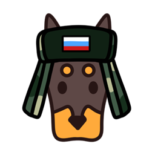

Полная русификация игры Anymaker (Demo). Выбор категорий перевода галочками и откат в один клик. Full Russian translation for Anymaker (Demo). Pick what to translate with checkboxes, and roll back in one click.
Меню, настройки, подсказки, тултипы, категории, подсказки управления и ошибки скриптинга — на русском.Menus, settings, hints, tooltips, categories, control hints and scripting errors — in Russian.
Интерфейс, предметы, компоненты транспорта, существа — отмечайте только то, что нужно перевести.Interface, items, vehicle components, creatures — tick only what you want translated.
Блоки (если, повторить…) можно оставить английскими — удобно для написания скриптов.The blocks (if, repeat…) can stay English — handy for writing scripts.
Названия предметов, компонентов транспорта, существ и животных.Names of items, vehicle components, creatures and animals.
Кнопка «Вернуть оригинал» полностью возвращает игру к английскому.The "Revert" button fully restores the game to English.
Папка игры находится автоматически (через библиотеки Steam) — ничего вписывать вручную не нужно.The game folder is detected automatically (via Steam libraries) — no manual input needed.
Активный язык в движке — это глобальная константа в bin/game.gcl. Русификатор меняет один байт (английский → русский) с проверкой сигнатуры функции, а тексты берёт из файлов данных:The active language is a global constant in bin/game.gcl. The russifier flips one byte (English → Russian) after verifying a function signature, and the text comes from data files:
bin/game.gcl → 1 байт: язык EN → RU rom/languages.tsv → интерфейс (колонка ru) rom/data/*.json → названия предметов / компонентов / существ
Приложение содержит обе версии файлов (русскую и английскую), поэтому переключение работает в любую сторону независимо от текущего состояния.The app bundles both versions of the files (Russian and English), so switching works either way regardless of the current state.
Остаётся английским: внутриигровая книга-руководство (использует шрифт без кириллицы) и карточки экрана «Новая игра» (текст зашит прямо в бинарник игры).Stays English: the in-world manual book (uses a font without Cyrillic glyphs) and the "New Game" screen cards (text is hardcoded in the game binary).
Готовый .exe:Prebuilt .exe:
Сборка из исходника:Build from source:
pip install pyinstaller build.bat
SmartScreen/антивирус может предупредить о неизвестном издателе — это нормально для неподписанных self-built exe.SmartScreen/antivirus may warn about an unknown publisher — normal for unsigned self-built executables.
Неофициальный фанатский проект, не связанный с разработчиками Anymaker. Изменяет только локальные файлы игры и создаёт резервные копии. Steam «Проверка целостности файлов игры» всегда вернёт оригинал.An unofficial fan project, not affiliated with the Anymaker developers. Edits only your local game files and makes backups. Steam's "Verify integrity of game files" always restores the original.